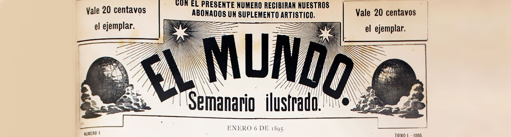
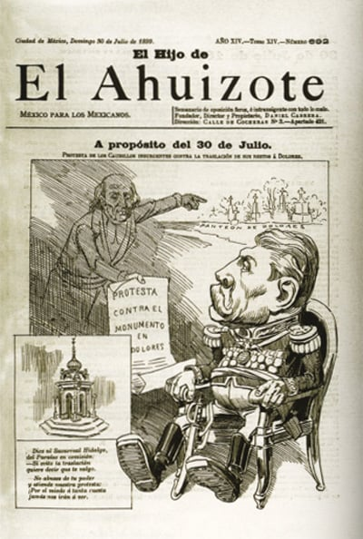

El avance del periodico
Hacia 1888 surgió un aspecto importante que fueron los dibujos que ilustraron varias publicaciones. Su valor radicaba no sólo en el aspecto estético sino en el cultural: la mayor parte del pueblo, que no sabía leer, podía, a través de las ilustraciones, formarse una idea de lo que pasaba.
Por la misma época surgió la idea de relatar en forma gráfica los temas de folletín que tanto apasionaban a los lectores de la época y que estaban inspirados en las obras de Zola, Balzac y Dumas. Las estampas de "La historia de una mujer" ejecuta das por el pintor catalán Planas fueron reproducidas en México por la fábrica de cigarros El Buen Tono para obsequiarlas dentro de las cajetillas de cigarros. "La historia de una mujer" es el antecedente más cercano de la actual historieta romántica que narra la vida de una mujer ambiciosa, en donde se muestran los sentimientos humanos de amor, odio, virtud, tradisción. El fondo era siempre de carácter moralizante. En otros semanarios como en el Arlequín, Cómico, Petronio, Kikiriki, El Mundo se publicaban pequeñas historietas de Alvaro Pruneda, padre e hijo, de carácter humorístico y jocoso.
Con la fundación de El Imparcial por Rafael Reyes Spíndola en 1896 empieza la época del periodismo moderno en México.
Rafael Reyes Spíndola en 1888 e introdujo en primera plana la sección de noticias o "gacetilla" suprimiendo a su vez todas las firmas de editoriales y demás artículos.
El Mundo Ilustrado

Durante el siglo XIX se publicaron anuncios, algunos con imágenes muy rudimentarias y escasas, pero es en la prensa finisecular, caracterizada por un espíritu de progreso y modernidad, donde encararemos ya imágenes publicitarias antecesoras de la publicada moderna. Gracias a su importancia, la prensa funcionó como medio idóneo para la comunicación de mensajes comerciales que reflejan una rica gama de aspectos sociales de la época. Lo que se refiere a anuncios impresos con imágenes dentro de un sentido moderno, surgieron con la prensa del porfiriato, portadora en sí misma de la modernidad de la época. El Mundo Ilustrado publicaban abundantes imágenes con buena calidad de impresión, con buena clase con tintas y maquinaria en ocasiones importadas de países europeos
El Hijo del Ahuizote

Como podemos ver, ciertas personas fueron muy beneficiadas por Porfirio Díaz, pero ahora en esta metodología será sobre lo opuesto, lo que realmente va orientado esta metodología, hablaremos de un periódico por parte de Daniel Cabrera (bajo el el pseudónimo de “Fígaro”), quien fue el escritor y dibujante de muchos reportajes e ilustraciones de El Hijo del Ahuizote, que tenía la pretensión de seguir la tarea del periódico El Ahuizote (1874-75), heraldo de un elevado tono crítico al mandato de Sebastián Lerdo de Tejada. Ya con Porfirio Díaz en el poder, El Hijo siguió las huellas de “su padre”, convirtiéndose en un ícono del periodismo de oposición de la ciudad de éxito, así como lo indica su lema que se mantuvo del primero al último número: “Semanario Independiente de oposición con todo lo malo”. La fuerte censura mediática y las restricciones de libertad de imprenta impuestas por Díaz hacen que El Hijo del Ahuizote cambie en numerosas ocasiones de casas de impresión y de redacción dentro de la ciudad. En 1900, por problemas de salud, Cabrera deja de modo provisorio en la dirección a Religo Mateos. Pasando por varias personas hasta que en 1902 durante esa época el ataque del Gobierno a los medios de comunicación se agudiza dejando en septiembre de 1902 al semanario censurado y a flores Magón Encarcelado. En consecuencia de la parte del Epistolario Revolucionario e Íntimo de Flores Magón. La dirección de El Hijo del Ahuiyote es retomada por Juan Sarabia hasta principios de 1903, cuando el gobierno de Diaz clausura los talleres de impresión, confisca la imprenta y prohíbe definitivamente la publicación de El Hijo del Ahuizote. Se conocen algunos intentos editoriales a principios del siglo que continúan la tradición de este semanario ilustrado como El Nieto del Ahuizote o el Bisnieto del Ahuizote, que desafortunadamente, también siguen con la tradición de ser clausurados y prohibidos por el gobierno. En la narrativa visual de El Hijo del Ahuizote, podemos apreciar las primeras tiras cómicas (llamadas historietas gráficas), su ácida caricatura política de actualidad nacional e internacional y a la integración de imágenes de otros periódicos en sus páginas.
Bibliografía
Secretaría de la Defensa Nacional. (2019, junio 29). 2 de julio de 1915, aniversario luctuoso del General Porfirio Díaz. Gobierno de México. https://www.gob.mx/sedena/documentos/2-de-julio-de-1915-aniversario-luctuoso-del-general-porfirio-diaz
Angulo, G. (2020, noviembre 20). Las aportaciones de Porfirio Díaz a México, que quizá NO conocías. La Gaceta. https://lagaceta.me/noticias/detalle/las-aportaciones-de-porfirio-diaz-a-mexico-que-quiza-no-conocias/